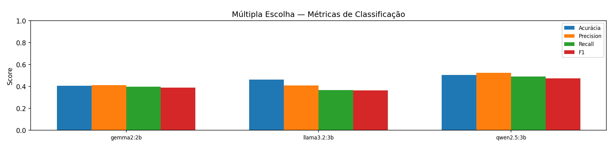
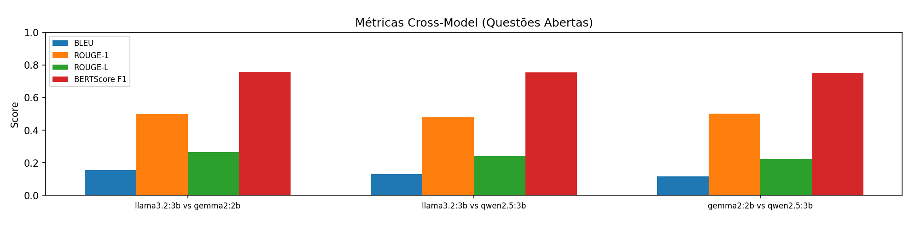
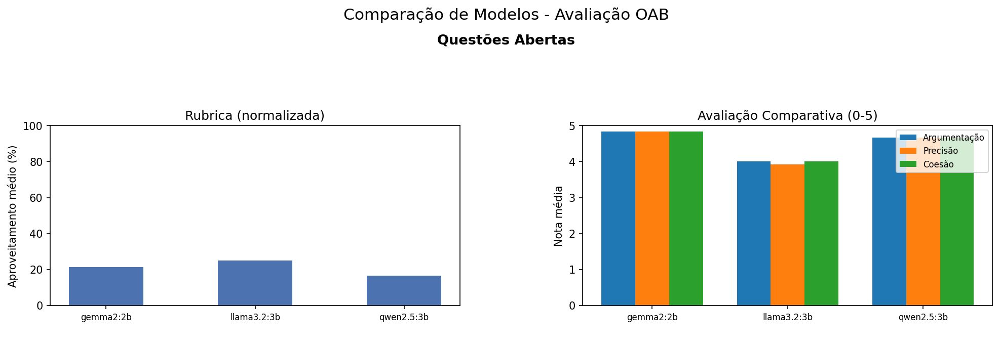

Curadoria de Datasets e Inferência com Modelos de Linguagem
no Domínio Jurídico
Tópicos Avançados em Eng. de Software e SI I — 2026.1
Universidade Federal de Sergipe (UFS)
Equipe 3 — Domínio Jurídico (JUD)
Abril 2026
Departamento de Computação — UFS
Equipe JUD 3 — Domínio Jurídico
| Modelo | Parâmetros | Desenvolvedor | Comando Ollama |
|---|---|---|---|
| Llama 3.2 | 3B | Meta | ollama run llama3.2:3b |
| Gemma 2 | 2B | ollama run gemma2:2b |
|
| Qwen 2.5 | 3B | Alibaba | ollama run qwen2.5:3b |
| Componente | Especificação |
|---|---|
| GPU | NVIDIA GeForce RTX 4050 (6 GB VRAM) |
| RAM | 32 GB |
| SO | Windows 11 Pro |
| Runtime | Ollama (execução local) |
| Python | 3.12+ |
Restrição de 6 GB de VRAM limita modelos a ~3B parâmetros
Índices 153–164
12 questões
OAB Bench (Maritaca AI)
Dissertativas com rubrica oficial e subquestões
Índices 1600–1722
122 questões
OAB Exams (HuggingFace)
Alternativas A-D com gabarito oficial
# src/load_dataset.py
OPEN_SLICE = slice(153, 165) # linhas 153-164 inclusive (12 questões abertas)
MC_SLICE = slice(1600, 1723) # linhas 1600-1722 inclusive (122 múltipla escolha)
my_open = df_questions.iloc[OPEN_SLICE]
my_mc = splits_mc["train"].iloc[MC_SLICE]# main.py — Orquestração do pipeline
def main():
# ETAPA 1/3 — Carregando e preparando datasets
ld.prepare_my_questions()
# ETAPA 2/3 — Inferência com LLMs + Curadoria
rm.run_open_questions()
rm.run_multiple_choice_questions()
rm.run_curator_tasks()
# ETAPA 3/3 — Avaliação e Leaderboard
df_open = ev.evaluate_open_questions()
df_mc = ev.evaluate_multiple_choice()
df_comparative = ev.evaluate_comparative()
df_cross = ev.evaluate_cross_metrics()
ev.generate_leaderboard(df_open, df_mc, df_comparative, df_cross)# src/run_models.py — Definição dos modelos e inferência
MODELS = ["llama3.2:3b", "gemma2:2b", "qwen2.5:3b"]
client = ollama.Client(timeout=120.0)
# Para cada questao x modelo:
for _, row in df.iterrows():
messages = [
{"role": "system", "content": system},
{"role": "user", "content": question},
]
for turn in turns: # subquestões
messages.append({"role": "user", "content": turn})
for model in MODELS:
response = client.chat(model=model, messages=messages)
answer = response["message"]["content"]# Múltipla escolha — templates Jinja2 para formatação
system_prompt = env.render_template("multiple_choice_system.jinja")
user_prompt = env.render_template("multiple_choice.jinja",
question=question, choices=choices)
messages = [
{"role": "system", "content": system_prompt},
{"role": "user", "content": user_prompt},
]Compara respostas entre todos os pares de modelos usando métricas automatizadas
# src/evaluation.py — evaluate_cross_metrics()
def evaluate_cross_metrics() -> pd.DataFrame:
df = pd.DataFrame(data)
models = df["model"].unique().tolist()
pairs = list(itertools.combinations(models, 2)) # 3 pares
bleu_metric = hf_evaluate.load("bleu")
rouge_metric = hf_evaluate.load("rouge")
bertscore_metric = hf_evaluate.load("bertscore")
for model_a, model_b in pairs:
df_a = df[df["model"] == model_a].set_index("question_id")
df_b = df[df["model"] == model_b].set_index("question_id")
common = df_a.index.intersection(df_b.index)
refs = [df_a.loc[q, "answer"] for q in common]
preds = [df_b.loc[q, "answer"] for q in common]
bleu = bleu_metric.compute(predictions=preds, references=refs)
rouge = rouge_metric.compute(predictions=preds, references=refs)
bert = bertscore_metric.compute(
predictions=preds, references=refs, lang="pt")
Modelo juiz (llama3.2:3b, temperature=0) avalia as respostas de cada modelo
usando três critérios qualitativos (0–5)
# src/evaluation.py — evaluate_comparative()
# O juiz recebe a questao + respostas dos 3 modelos
prompt = env.render_template("judge_comparative.jinja",
question=subset.iloc[0]["question"],
answers=[(row["model"], row["answer"]) for _, row in subset.iterrows()])
response = client.chat(
model=JUDGE_MODEL, # "llama3.2:3b"
options={"temperature": 0},
messages=[{"role": "user", "content": prompt}])
# Formula ponderada do score final
scores = json.loads(_extract_json(content))
for model, r in scores.items():
final = (0.4 * r["argumentacao"] # Argumentação Jurídica (40%)
+ 0.4 * r["precisão"] # Precisão Legal (40%)
+ 0.2 * r["coesao"]) # Coesão Textual (20%)122 questões objetivas do OAB Exams — Accuracy, Precision, Recall e F1 (macro)
| Modelo | Accuracy | Precision | Recall | F1 |
|---|---|---|---|---|
| llama3.2:3b | 46.34% | 0.4096 | 0.3662 | 0.3632 |
| gemma2:2b | 40.65% | 0.4124 | 0.3979 | 0.3884 |
| qwen2.5:3b | 50.41% | 0.5250 | 0.4903 | 0.4742 |

Comparação entre pares de modelos nas 12 questões abertas
| Par de Modelos | BLEU | ROUGE-1 | ROUGE-2 | ROUGE-L | BERTScore F1 |
|---|---|---|---|---|---|
| llama3.2 vs gemma2 | 0.155 | 0.500 | 0.225 | 0.265 | 0.757 |
| llama3.2 vs qwen2.5 | 0.129 | 0.480 | 0.208 | 0.241 | 0.753 |
| gemma2 vs qwen2.5 | 0.115 | 0.500 | 0.186 | 0.222 | 0.750 |

Modelo juiz avalia respostas abertas contra a rubrica oficial (% de aproveitamento)
| Modelo | Média Rubrica (%) |
|---|---|
| llama3.2:3b | 25.00% |
| gemma2:2b | 21.45% |
| qwen2.5:3b | 16.67% |
Qualidade de escrita avaliada pelo modelo juiz (0–5)
| Modelo | Argumentação | Precisão | Coesão | Score Final |
|---|---|---|---|---|
| gemma2:2b | 4.83 | 4.83 | 4.83 | 4.83 |
| qwen2.5:3b | 4.67 | 4.67 | 4.67 | 4.67 |
| llama3.2:3b | 4.00 | 3.92 | 4.00 | 3.97 |

Ranking varia conforme a dimensão avaliada — não há vencedor absoluto
| Dimensão | Líder | Valor |
|---|---|---|
| Múltipla Escolha (Accuracy) | Qwen 2.5 | 50.41% |
| Rubrica Oficial (%) | Llama 3.2 | 25.00% |
| Qualidade de Escrita (0-5) | Gemma 2 | 4.83 |
| F1-Score MC (macro) | Qwen 2.5 | 0.4742 |
llama3.2:3b) é simultaneamente um dos avaliados,
podendo favorecer suas próprias respostas
# O juiz e um dos modelos avaliados — potencial conflito
JUDGE_MODEL = "llama3.2:3b" # src/evaluation.py:25
MODELS = ["llama3.2:3b", "gemma2:2b", "qwen2.5:3b"] # src/run_models.py:23